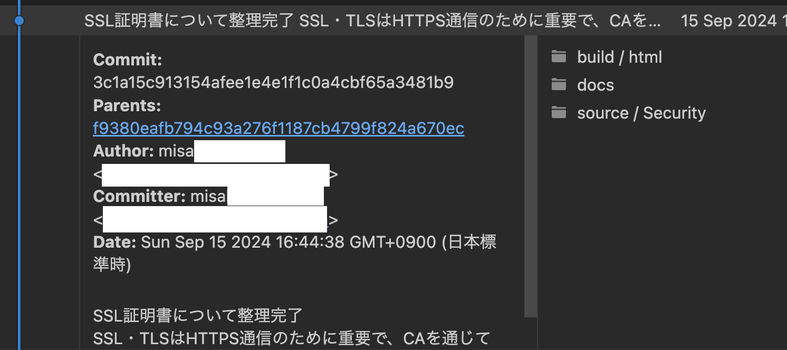
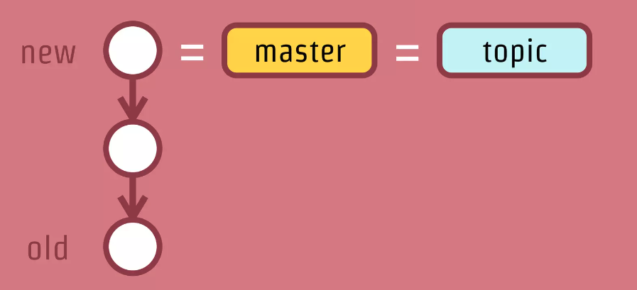
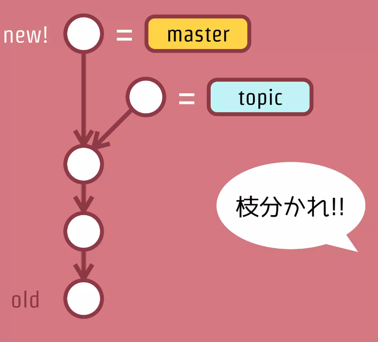
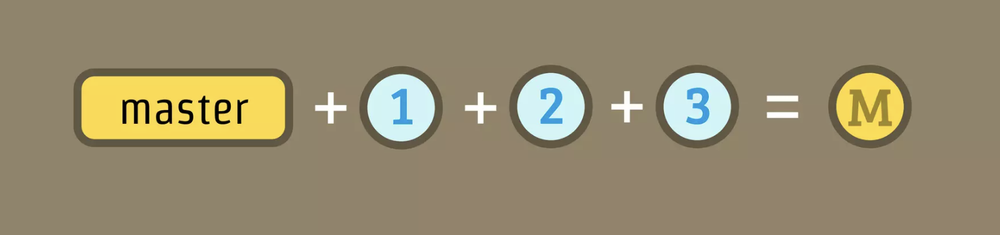
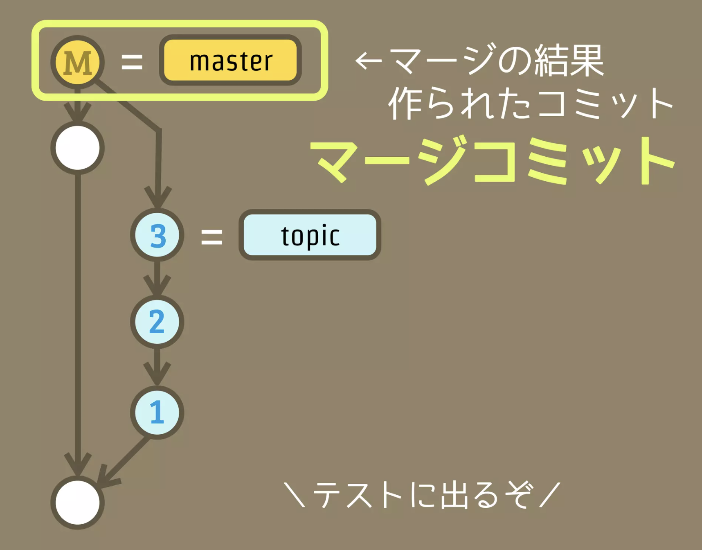
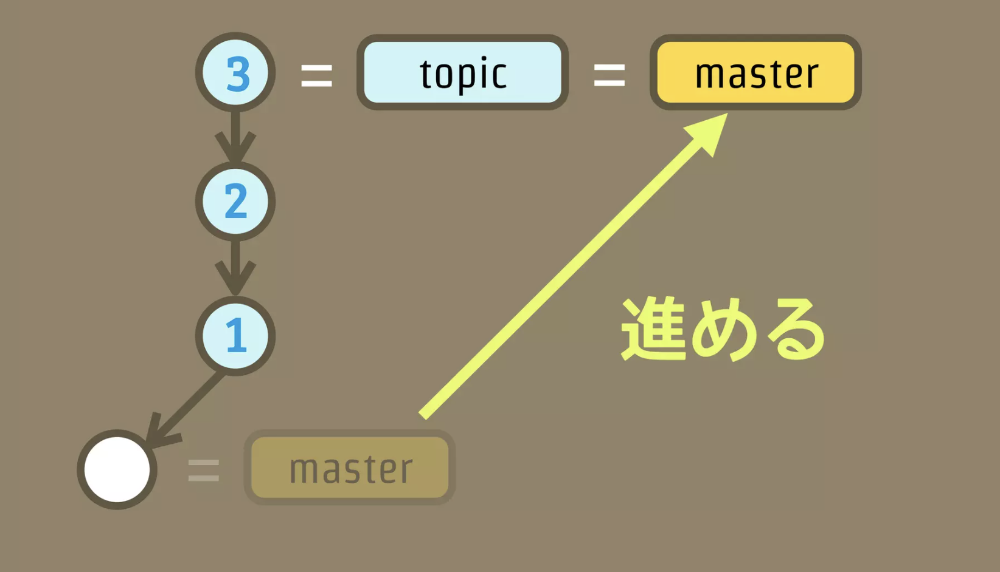
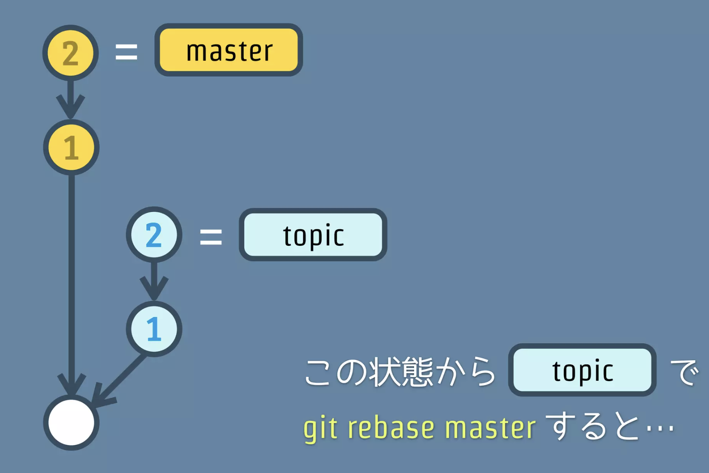
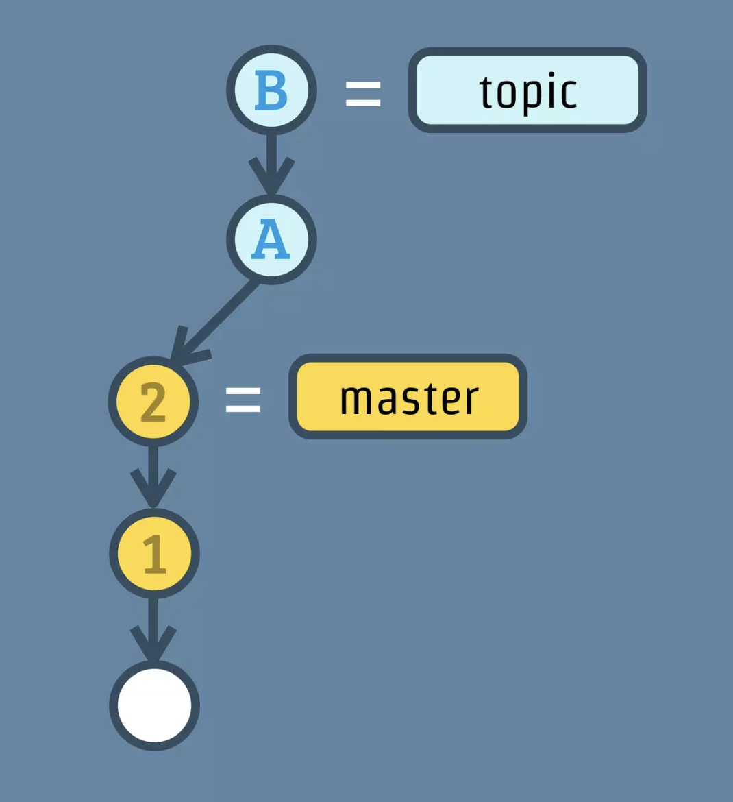
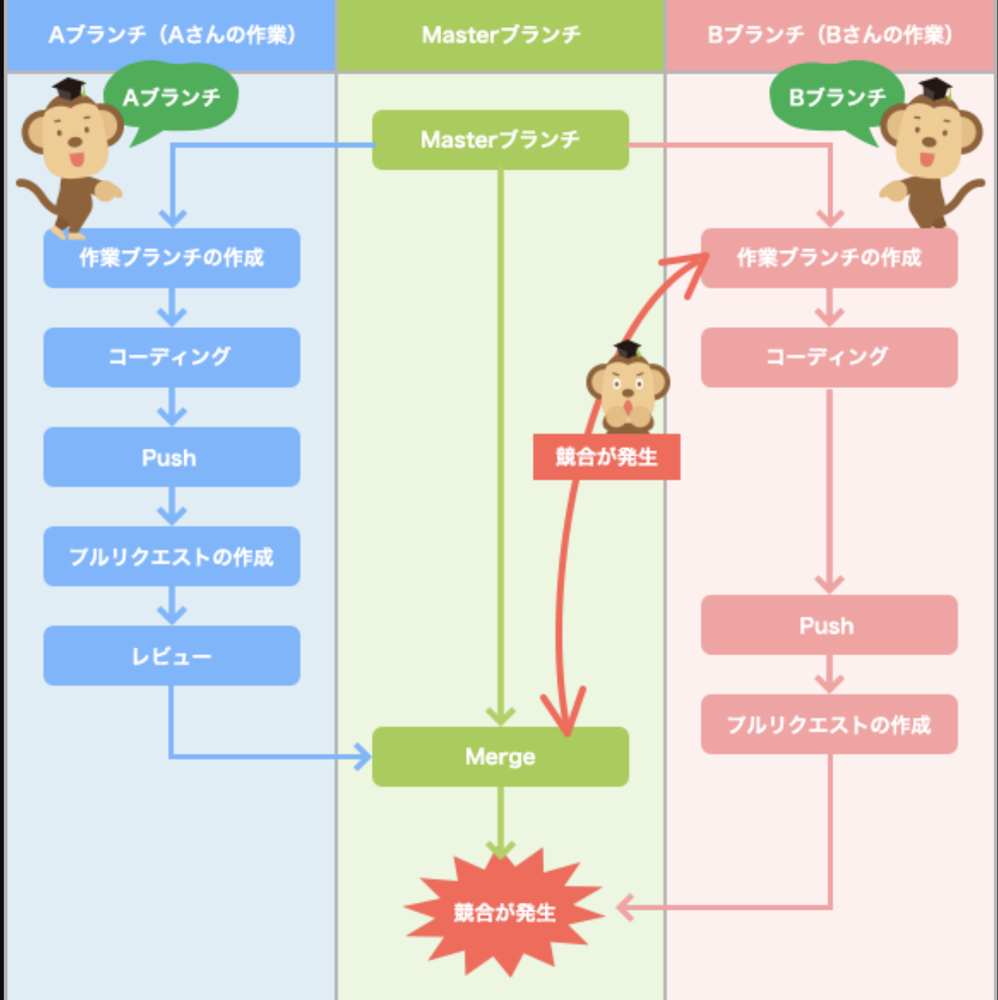

1. gitの基本知識¶
1.1. コミット¶
gitにおけるコミットでは、実行のたびにファイルの内容をスナップショットとして全て記録する。 また、コミットでは以下のような情報が含まれている
Commitリビジョン（SHA-１のハッシュ）
Parents（1つ前のコミットのリビジョン）
Author（コミットを作成した人）
Committer（コミットを適用した人）
Date（日付）
コメント（コミット時のコメント）
ファイルのスナップショット（ディレクトリツリー構造）

1.2. ブランチ¶
ブランチとは、最新のコミットに対する「ラベル」付与である。
ブランチを切るという操作は、現在の最新コミットに対してさらに別名を付与することを意味する。
 こわくない Git
ここから、それぞれのブランチに対して新しいコミットとプッシュを行うと、ブランチごとにコミットを管理するため、枝分かれする。
 こわくない Git
1.3. マージ¶
マージとは、異なるブランチに存在するコミットを別のブランチに統合することである。

上記のmasterブランチに対して、Topicブランチをマージすると、Masterブランチの最新コミットに対してTopicの持っている3つのコミットを反映させる。
 こわくない Git
結果として新たなコミットが作成されることになる。このコミットをマージコミットと呼ぶ。  こわくない Git
1.3.1. Fast-Forwardマージ¶
上記のマージをNon-Fast-Forwardマージと呼ぶ。 Fast-Forwardマージは基本的に非推奨で、Non-Fast-Forwardマージを利用する。
Fast-Forwardとは、ブランチが枝分かれしていない時にマージコミットを作成せずにブランチをマージする方法。
 こわくない Git
ブランチを作成してマージをした履歴が分かり辛くなるのでブランチ戦略や状況にもよるが基本的にはマージコミットが残るNon-Fast-Forwardのマージを実施する。
1.4. Rebaseについて¶
Rebaseは異なるブランチの持つコミットを無理やり別ブランチの最新コミットから実施する作業。
Rebaseをマージの代わりに異なるブランチの統合に利用するのは基本的に非推奨。マージを利用する。
 こわくない Git
結果として以下のような形になる。こちらに関してもFast-Forward同様にマージの履歴が残らないため、異なるブランチを統合したなどの履歴がわかり辛くなる。  こわくない Git
1.5. コンフリクトについて¶
masterからAブランチとBブランチを作成し、それぞれで改修を行うとする。
Aブランチをmasterにマージする際には、masterのブランチに対してブランチAのコミットを統合することになるので、スムーズにマージすることができる。
その後にBブランチをmasterマージする際には、masterには既にブランチAの内容が反映されている。元々のmasterから同じ箇所が修正されていると、ブランチAとブランチBどちらを採用すればいいかgitが理解することができないためコンフリクトが発生する。
 サル先生のgit入門